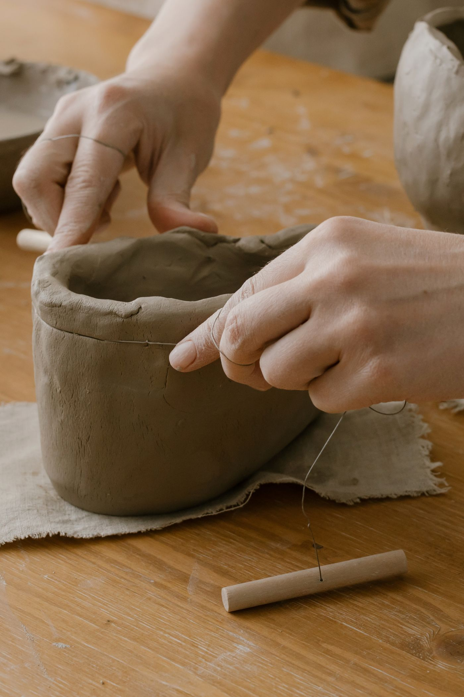

Откройте каталог
Укажите возраст ребёнка, район и бюджет.
 рядом.♡ Мой выбор0
рядом.♡ Мой выбор0Разовые занятия для ребёнка в шаговой доступности.
Попробуйте без покупки абонемента.
В демокаталоге 6 занятий с пробной записью.
 Порисовать. Испачкаться. Попросить ещё.
Порисовать. Испачкаться. Попросить ещё.Примеры занятий для знакомства с сервисом. Студии, расписание и цены демонстрационные.

Вы ищете занятие для ребёнка 5–12 лет на выходные, но пока не готовы покупать абонемент. В «Рядом» можно выбрать одно посещение в своём районе и посмотреть, захочет ли ребёнок прийти ещё.
Познакомиться с «Рядом» ↗Укажите возраст ребёнка, район и бюджет.
Посмотрите программу, стоимость и доступное время.
Выберите сеанс и число мест. Демозапись появится в «Моём выборе».
Родитель платит за выбранное занятие по цене студии. Стоимость указана в каждой карточке.
По модели проекта студия перечисляет «Рядом» 15% с оплаченного заказа. Например, с посещения за 1 000 ₽ сервис получает 150 ₽.
Сейчас занятия демонстрационные: оплата не списывается, заявка в студию не отправляется.
Условия для студий ↗